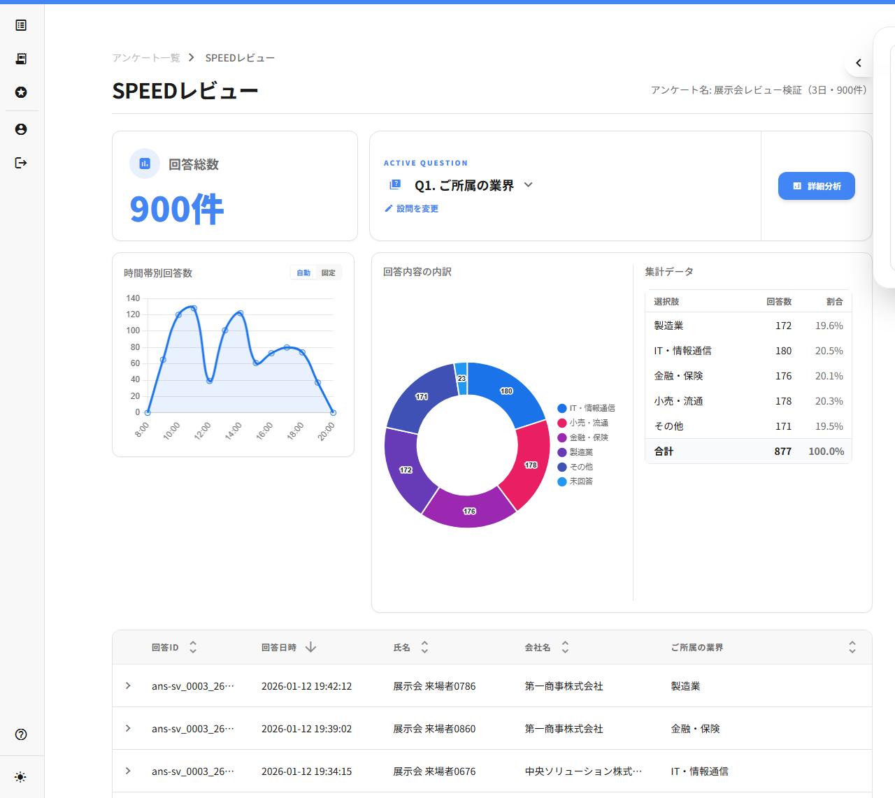
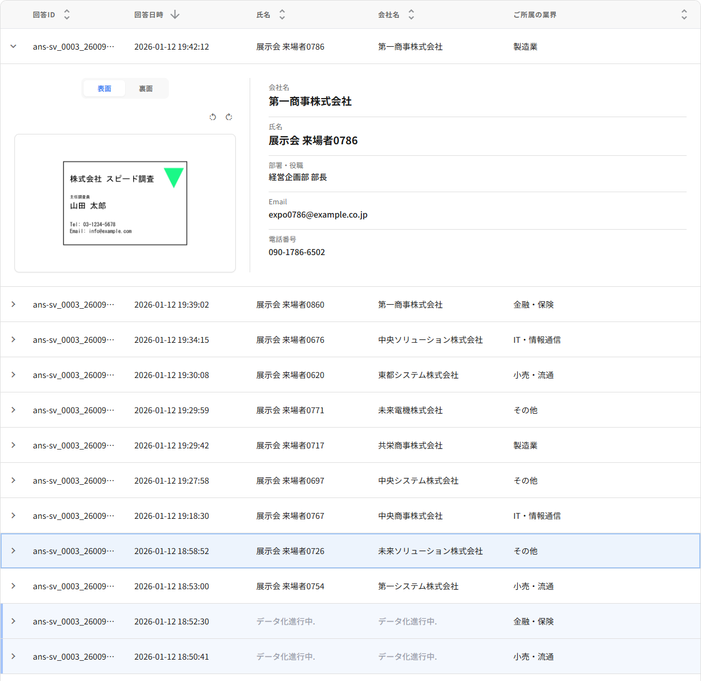
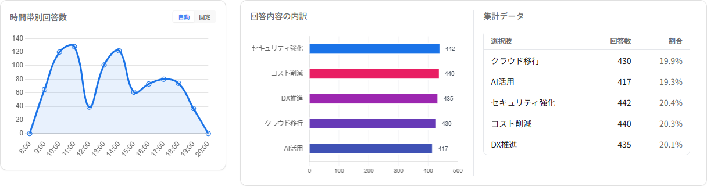

SPEEDレビューでできること
SPEEDレビューでは、対象アンケートの回答総数、回答が集まった時間帯、設問ごとの回答傾向、回答者ごとの名刺情報をまとめて確認できます。紙のアンケートや名刺を別々に見比べるのではなく、1 件ごとの回答と来場者情報を並べて確認できるため、展示会後の整理作業を進めやすくなります。

利用前に確認しておくこと
はじめに、確認したいアンケートが作成済みで、来場者からの回答が入っていることを確認してください。名刺データ化を利用している場合は、データ化が完了した情報から順に画面へ反映されます。処理中の名刺がある場合も、回答内容は先に確認できます。
基本の確認手順
- ログイン後の管理画面で、対象のアンケートを開きます。
- アンケートの詳細画面から「SPEEDレビュー」を選択します。
- 画面上部で回答総数と時間帯別の回答数を確認します。
- 回答一覧で、回答日時、氏名、会社名、選択中の設問回答を確認します。
- 気になる回答があれば行を開き、名刺画像と回答詳細を確認します。
回答一覧の見方
回答一覧では、回答ID、回答日時、氏名、会社名、選択中の設問回答を横並びで確認できます。会期中は新しい回答から確認し、会期後は日付や名刺データ化の状態で絞り込むと、確認すべき回答を見つけやすくなります。
設問回答の列は、確認したい設問に切り替えられます。来場目的、興味分野、検討時期など、フォロー優先度を判断しやすい設問を選ぶと、営業や運営チームへの共有前チェックに使いやすくなります。
名刺情報と回答詳細を確認する
回答行を開くと、名刺画像、名刺から読み取った情報、アンケート回答の詳細を確認できます。名刺の表面・裏面を見比べながら、会社名や氏名、連絡先、回答内容が同じ来場者の情報として整理されているかを確認してください。

名刺データ化が処理中の場合は、完了後に情報が反映されます。先に回答内容だけを見ておき、名刺情報がそろってからフォロー対象を確定する運用も可能です。
グラフ・時間帯別回答数の見方
画面上部の時間帯別回答数では、回答が集まった時間の偏りを確認できます。ブースの混雑時間帯や、声かけ・配布物の反応が出やすかった時間帯を振り返るときに役立ちます。
回答内容の内訳では、選択式の設問を中心に回答傾向を確認できます。自由記述など、グラフ化に向かない設問は一覧や詳細画面で内容を確認してください。

詳細分析へ進むタイミング
SPEEDレビューで全体の件数、時間帯、気になる回答を確認したあと、より詳しく集計したい場合は「詳細分析」へ進みます。複数の設問を比較したいときや、会期後のレポート作成前に傾向を整理したいときにご利用ください。利用できる分析機能は、ご契約プランや画面の表示条件によって異なる場合があります。
困ったときは
基本操作を確認したい場合は ヘルプセンター と チュートリアル をご覧ください。画面の表示やデータの確認でお困りの場合は、状況が分かる内容を添えて お問い合わせフォーム よりご連絡ください。